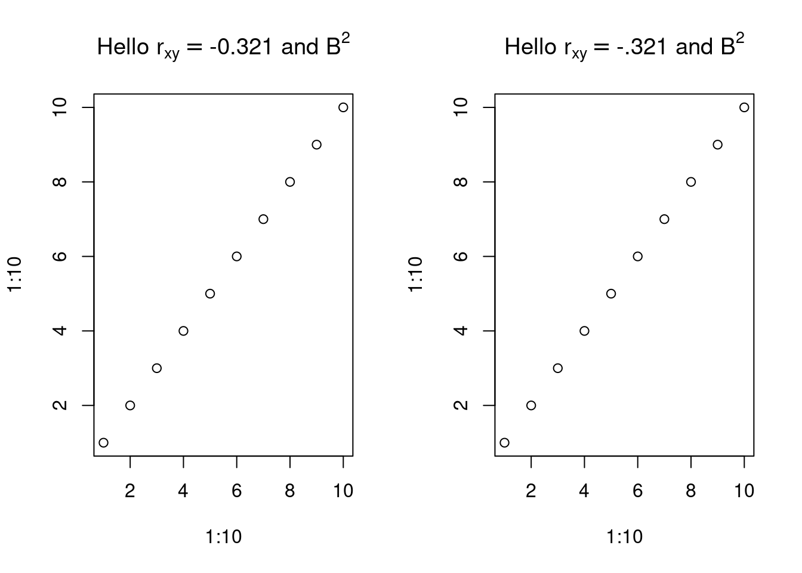

bquote(1+2) # 1 + 21 + 2two = 2
bquote(1 + two) # 1 + two1 + twobquote(1 + .(two)) # 1 + 2 (substitution, not eval)1 + 2eval(bquote(1 + two)) # 3 [1] 3eval(bquote(1 + .(two))) # 3 [1] 3quarto preview
quarto render % ; zathura # not quite right cli
math mode latex, seems to work if outside R chunk \[ x^2 \]
#—————————– ## R allows string or symbol x = 1
“y” = 10 y #
identical(x,y) # TRUE identical(x, “y”) # FALSE
bquote(1+2) # 1 + 21 + 2two = 2
bquote(1 + two) # 1 + two1 + twobquote(1 + .(two)) # 1 + 2 (substitution, not eval)1 + 2eval(bquote(1 + two)) # 3 [1] 3eval(bquote(1 + .(two))) # 3 [1] 3###—————————–
x = 1 y = 2 z = 3 xyz <- bquote((x + y + z)) ## (x + y + z) xyz
is.expression(xyz) is.character(xyz) typeof(xyz) is.call(xyz)
eval(xyz)
bquote(-.(xyz) / 2) ## TRUE
(abc = quote((x+y+z))) is.expression(abc) is.character(abc) typeof(abc) is.call(abc) ## TURE
###—————————–
x = “jim” bquote(my names is .(x))
eval(bquote(“my name is .(x)”))) #—————————–
(unevaluated) rm(x)
x = 1
quote(1 + .(x)) # 1 + .(x) 1 + .(x)bquote(1 + .(x)) # 1 + 11 + 1bquote(template + .(x))template + 1bquote(sin(.(x))) # sin(1)sin(1)## (stole from https://github.com/klmr/box)
subject="bquote"
mod_name="base"
bquote(help(topic = .(subject), package = .(mod_name)))help(topic = "bquote", package = "base")eval( bquote(help(topic = .(subject), package = .(mod_name))))
subject="quote"
eval( bquote(help(topic = .(subject), package = .(mod_name))))
##
d = 2
bquote(a+b+c + .(d)) ## a + b + c + 2a + b + c + 2##
theta = pi/4
bquote(sin(1 + .(theta))) ## sin(1 + 0.7853...)sin(1 + 0.785398163397448)eval(bquote(sin(1 + .(theta)))) ## 0.977[1] 0.9770613##
z= bquote(sin(1 + .(theta))) ## sin(1 + 0.7853...)
typeof(z) ## "language"[1] "language"is.call(z) ## T[1] TRUEeval(z) ## 0.977[1] 0.9770613x = 5
bquote(x == .(x))x == 5bquote(.(x))[1] 5## from ethz documentation, takes expr, returns lang ob
default <- 1
(z = bquote( function(x, y = .(default)) x+y ))function(x, y = 1) x + ytypeof(z)[1] "language"is.call(z) #T[1] TRUEis.expression(z) #F [1] FALSEis.symbol(z) #F[1] FALSEa = 2
plot(1:10, a*(1:10), main = bquote(a == .(a)))
(angle = 1:10) [1] 1 2 3 4 5 6 7 8 9 10(variable = as.name("angle")) ## variable is now a symbolangleis.character(variable) # FALSE[1] FALSEis.name(variable) # TRUE[1] TRUEis.symbol(variable) # TRUE[1] TRUEtypeof(variable) # TRUE[1] "symbol"##
expr = quote(x+y)
is.expression(expr) # FALSE[1] FALSEis.call(expr) # TRUE[1] TRUEstr(expr) language x + y#-----------------------------
## quasiquotation: insert .... into an expr template; return expression
pdf()
plot(x = 1:10, y=91:100)
bquote(x= .(variable))Error in bquote(x = .(variable)): unused argument (x = .(variable))bquote(
plot(x = .(variable),
y = sin(.(variable)))
)plot(x = angle, y = sin(angle))dev.off()png
2 ## A variable to pass in
cor <- -.321
cor2 <- '-.321'
par(mfrow = c(1, 2))
plot(1:10, 1:10, main = bquote("Hello" ~ r[xy] == .(cor) ~ "and" ~ B^2))
plot(1:10, 1:10, main = bquote("Hello" ~ r[xy] == .(cor2) ~ "and" ~ B^2))
bquote("Hello")[1] "Hello"bquote("Hello" ~ 3)"Hello" ~ 3bquote("Hello" ~ r[xy])"Hello" ~ r[xy]x = 2
bquote("hello" ~ .(x))"hello" ~ 2bquote("x" ~ .(x))"x" ~ 2bquote("The answer " ~.(x))"The answer " ~ 2bquote(x == .(x))x == 2if (F) bquote(x = .(x))
# want 1 + 2
y = 1
x=2
bquote( function(x, y = .(y)) x+y )function(x, y = 1) x + yeval(bquote( function(x, y = .(y)) x+y ))function(x, y = .(y)) x+yeval(eval(bquote( function(x, y = .(y)) x+y )))function(x, y = .(y)) x+y